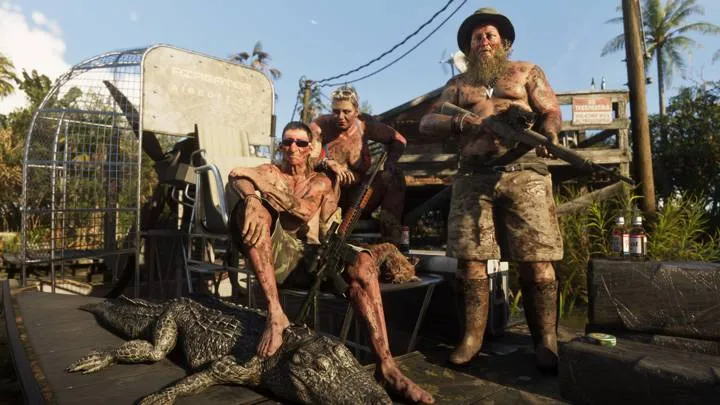
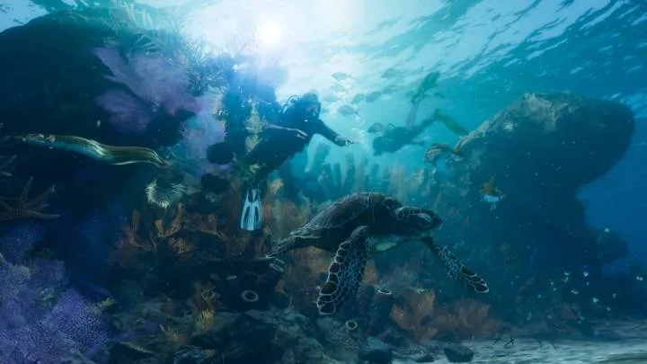
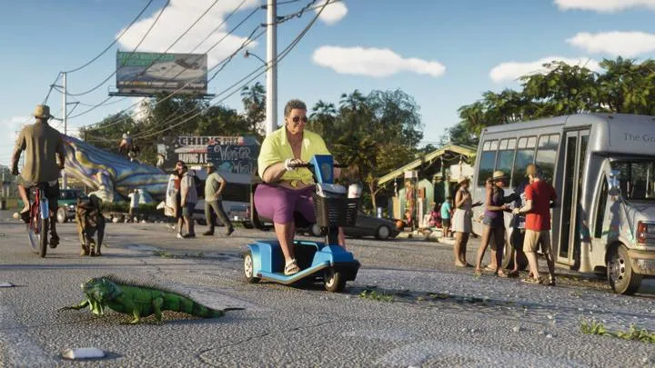

Аллигаторы
Главное животное Леониды: в болотах Grassrivers, в трейлерах и даже в бассейне частного дома. Рядом на болотах — змеи, бобры, цапли, журавли, колпицы и утки.
По подсчёту GTABase, в трейлерах и на официальных скриншотах уже заметили около 30 видов. Rockstar обещает экосистему: животные охотятся, прячутся и живут своей жизнью. После релиза дополним список всеми видами из игры.
7 в разделе: Болота · Леса Mount Kalaga · Море и побережье · Город и дом
Главное животное Леониды: в болотах Grassrivers, в трейлерах и даже в бассейне частного дома. Рядом на болотах — змеи, бобры, цапли, журавли, колпицы и утки.

Охотники Grassrivers позируют с добытым аллигатором.

Олени у водопоя, а в тени к ним крадётся пума. Ещё в лесах замечены рысь, кабан, лиса, енот и белка.

Под водой Кис — морская черепаха, коралловый риф и дайверы. В кадрах мелькали дельфины, ламантины, акулы, угри, пеликаны и чайки.

Стая розовых фламинго взлетает над болотом.

Игуаны греются на камнях и разгуливают по улицам Кис прямо среди людей.

Замечены доберман, немецкая овчарка, ротвейлер и чихуахуа. По данным превью, собак можно гладить и кормить.
Кадры: Rockstar Games (трейлеры 1 и 2, «Расширенный показ», официальные скриншоты). Источник у каждой карточки указан под названием. Обновлено: 3 октября 2026.
Каждый день — одно сравнение: кадр игры рядом с реальным фото. Подписывайтесь:
YouTubeInstagramTikTokДругие разделы справочника: Персонажи · Транспорт · Бренды и заведения · Занятия · Механики · Регионы · Об игре